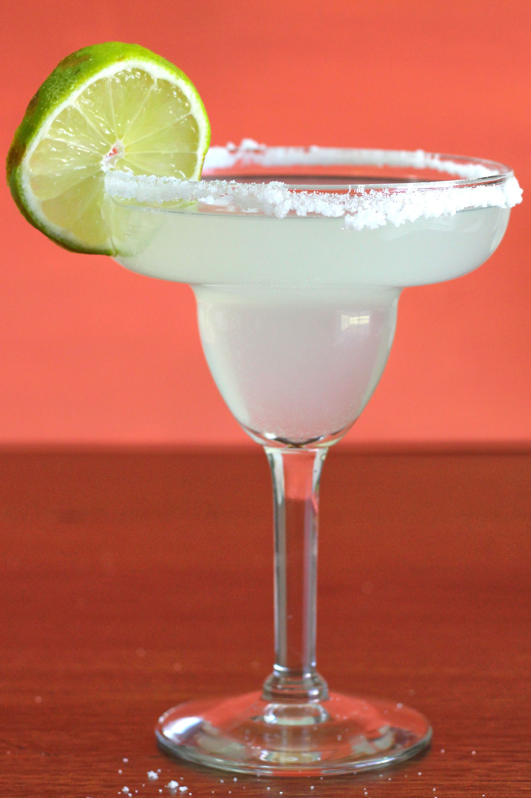

Lab 4 - Pseudocoding and Problem-solving
Challenge
The challenge of lab 4 was to create pseudocode for an everyday task and a simple computer game. We needed to create a list of high level tasks that could be broken down into sub-steps.
Problems
It took a second for me (Elijah) to get the hang of how to format the precode part with the Pseudocode to look nice but past that, there wasn't any technical difficulties that arose during the lab experiment.
Reflection
Overall, the lab went quite smoothly. It was pretty cool learning about the process of learning a margarita from Wes (a process that i legally cannot do until May 23rd) and it was nice coming back to python code to do some pseudocode for rock paper scissors. I'm sure that this pseudocoding process will become quite handy for future labs and projects.
Results
Making Margarita's
Make a list of ingredients -
- Salt
- Ice
- Lime
- Simple Syrup
- Tequila
- Triple Sec
- Gran Marnier
- 1 tablespoon of salt
- 9 oz Ice
- 2 Limes
- 2 oz Simple Syrup
- 2 oz Tequila
- 1 oz Triple Sec
- 1 oz Gran Marnier
- Salt rim of glass
- Add Ice to glass
- Squeeze 2 Limes into glass
- Add Simple Syrup
- Pour Tequila, Triple Sec, and Gran Marnier into glass
- Stir
- Enjoy!
Rock, Paper, Scissors Pseudocode
Import Random
Create a list that has rock, paper, scissors
Create a variable that is equal to the random choice from rock paper scissors. The computer will use this variable against the player
Ask for user input
User will answer by inputting rock paper or scissors.
If input does not match the accepted choices, ask the user to choose again
Else create a variable that is equal to the user’s input
If user’s choice equals computer’s choice, print Tie
Else if user’s choice equals Rock:
If computer’s choice equals Scissors:
Print “Rock beats Scissors, You Win!”
Else computer’s choice equals Paper
Print “Paper beats Rock, You Lose!”
Else if user’s choice equals Paper:
If computer’s choice equals Rock:
Print “Paper beats Rock, You Win!”
Else computer’s choice equals Scissors:
Print “Scissors beats Paper, You Lose!”
Else if user’s choice equals Scissors:
If computer’s choice equals Paper:
Print “Scissors beats Paper, You Win!”
Else computer’s choice equals Rock:
Print “Rock beat Scissors, You Lose!”